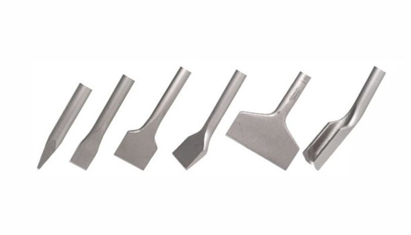

BOURACÍ A VRTACÍ TECHNIKA
Veškeré ceny pujčovného viz. aktuální ceník.
-
ID = 1-1
Hilti TE 1
Vrtací kladivo
Jmenovitý příkon: 650 W
Energie příklepu: 1,5 J
Upínání: SDS+
Hmotnost přístroje: 2,4 kg
Použití: vrtání do betonu, zdiva a přírodního kameneCena pujčovného 1 hodina 60 Kč 2 - 5 hodin 120 Kč 1 den/24h 170 Kč víkend 240 Kč kauce 2000 Kč -
ID = 1-2
Hilti TE 2
Vrtací kladivo
Jmenovitý příkon: 650 W
Energie příklepu: 1,8 J
Upínání: SDS+
Hmotnost přístroje: 2,7 kg
Použití: vrtání do betonu, zdiva a přírodního kameneCena pujčovného 1 hodina 60 Kč 2 - 5 hodin 120 Kč 1 den/24h 170 Kč víkend 240 Kč kauce 2000 Kč -
ID = 1-3
Hilti TE 16
Kombinované kladivo
Jmenovitý příkon: 800 W
Energie příklepu: 4,2 J
Upínání: SDS+
Hmotnost přístroje: 3,8 kg
Použití: lehké sekání obkladu, vrtání průrazů.Cena pujčovného 1 hodina 120 Kč 2 - 5 hodin 240 Kč 1 den/24h 350 Kč víkend 600 Kč kauce 5000 Kč -
ID = 1-4
Hilti TE 30-c avr
Kombinované kladivo
Jmenovitý příkon: 850 W
Energie příklepu: 3,3 J
Upínání: SDS+
Hmotnost přístroje: 4,2 kg
Použití: lehké sekání obkladu, vrtání průrazů.Cena pujčovného 1 hodina 120 Kč 2 - 5 hodin 240 Kč 1 den/24h 350 Kč víkend 600 Kč kauce 5000 Kč -
ID = 1-5
Hilti TE 50
Kombinované kladivo
Jmenovitý příkon: 1050 W
Energie příklepu: 5,2 J
Upínání: SDS Max
Hmotnost přístroje: 5,7 kg
Použití: lehké sekání a vrtání do zdivaCena pujčovného 1 hodina 180 Kč 2 - 5 hodin 300 Kč 1 den/24h 420 Kč víkend 740 Kč kauce 5000 Kč -

ID = 1-6
Hilti TE 500
Bourací kladivo
Jmenovitý příkon: 1100 W
Energie příklepu: 7,5 J
Upínání: SDS Max
Hmotnost přístroje: 5,6 kg
Použití: lehké až středně těžké sekáníCena pujčovného 1 hodina 180 Kč 2 - 5 hodin 300 Kč 1 den/24h 420 Kč víkend 740 Kč kauce 5000 Kč -
ID = 1-7
Hilti TE 60
Kombinované kladivo
Jmenovitý příkon: 1200 W
Energie příklepu: 7 J
Upínání: SDS Max
Hmotnost přístroje: 7,4 kg
Použití: středně těžké sekání a vrtáníCena pujčovného 1 hodina 180 Kč 2 - 5 hodin 300 Kč 1 den/24h 420 Kč víkend 740 Kč kauce 5000 Kč -
ID = 1-8
Hilti TE 70
Kombinované kladivo
Jmenovitý příkon: 1800 W
Energie příklepu: 11,5 J
Upínání: SDS Max
Hmotnost přístroje: 9,5 kg
Použití: střední až těžké sekání a vrtáníCena pujčovného 1 hodina 250 Kč 2 - 5 hodin 360 Kč 1 den/24h 500 Kč víkend 900 Kč kauce 10000 Kč -
ID = 1-9
Hilti TE 700
Bourací kladivo
Jmenovitý příkon: 1300 W
Energie příklepu: 11,5 J
Upínání: SDS Max
Hmotnost přístroje: 7 kg
Použití: střední až těžké demoliční práceCena pujčovného 1 hodina 250 Kč 2 - 5 hodin 300 Kč 1 den/24h 480 Kč víkend 860 Kč kauce 10000 Kč -
ID = 1-10
Hilti TE 1000
Bourací kladivo
Jmenovitý příkon: 1750 W
Energie příklepu: 26 J
Upínání: SDS Max
Hmotnost přístroje: 12,5 kg
Použití: těžké demoliční práceCena pujčovného 1 hodina 280 Kč 2 - 5 hodin 350 Kč 1 den/24h 550 Kč víkend 1000 Kč kauce 10000 Kč -
ID = 1-11
Wacker EHB 11
Kombinované kladivo
Jmenovitý příkon: 1380 W
Energie příklepu: 19 J
Upínání: SDS Max
Hmotnost přístroje: 11 kg
Použití: střední až těžké sekání a vrtáníCena pujčovného 1 hodina 250 Kč 2 - 5 hodin 350 Kč 1 den/24h 550 Kč víkend 900 Kč kauce 10000 Kč -
ID = 1-12
Fein DSK 658-1
Pomaloběžná vrtačka
Jmenovitý příkon: 720 W
Upínání: Morseův kužel 2
Vrtáky: 8 - 22,5 mm
Hmotnost přístroje: 6,4 kg
Použití: vrtání větších průměrů - železo, dřevoCena pujčovného 1 hodina 200 Kč 2 - 5 hodin 250 Kč 1 den/24h 380 Kč víkend 600 Kč kauce 10000 Kč -
ID = 1-13
Aku vrtačky
Akumulátorové vrtačky dle výběru
SF 6H-A22 - sklíčidlo: 1,5-13 mm
Hilti TE-6 - SDS+, 2 J, odsáváníCena pujčovného 1 hodina 120 Kč 2 - 5 hodin 200 Kč 1 den/24h 280 Kč víkend 400 Kč kauce 3000 Kč -
ID = 1-14
Aku šroubováky
Akumulátorové šroubováky a rázové utahováky dle výběru.
Cena pujčovného 1 hodina 120 Kč 2 - 5 hodin 200 Kč 1 den/24h 280 Kč víkend 400 Kč kauce 3000 Kč -

Sekáče
Upínání: SDS+, SDS max, TE-S
Dle výběru. Samobrusné i klasické. -
Vrtáky
Upínání SDS+: ф5 - 28 mm
Upínání SDS Max: ф20 - 42 mm -
Korunkové vrtáky
Upínání SDS+: ф65 - 125 mm
Upínání SDS Max: ф50 - 150 mm